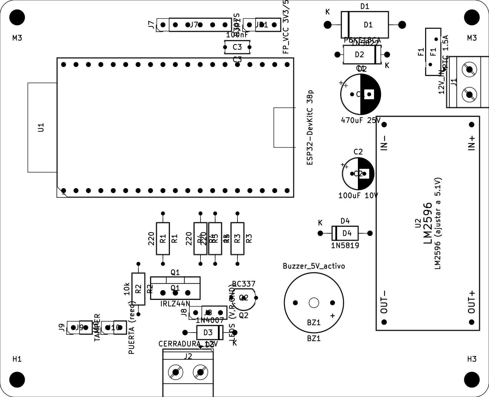

InicioHome / ProyectosProjects / Acceso 4.0
Acceso 4.0
Un sistema de cerraduras inteligentes de bajo costo para los laboratorios de nuestra escuela: acceso con huella digital, control de la cerradura y aviso si la puerta queda abierta o alguien intenta forzar el equipo.
A low-cost smart lock system for our school's labs: fingerprint access, lock control and alerts if the door is left open or someone tries to tamper with the unit.

- TipoTypeProyecto para la ETec (UM)Project for ETec (UM)
- Mi rolMy roleDiseño del circuito y de la placaCircuit and board design
- StackKiCad · ESP32-DevKitC · R307S · IRLZ44N · LM2596 · Freerouting
La placaThe board
Una sola placa que se alimenta con 12 V y maneja todo el acceso a un laboratorio:
A single board powered from 12 V that handles all access to a lab:
- ESP32 como cerebro del sistema.
- Lector de huellas R307S para identificar a quién entra.
- Cerradura eléctrica de 12 V manejada con un MOSFET IRLZ44N y un diodo de protección.
- Sensor de puerta (reed) para saber si quedó abierta, y sensor antisabotaje (tamper).
- Buzzer y LEDs para avisar al usuario.
- Fuente conmutada LM2596 que baja de 12 V a 5 V, con fusible reseteable, protección contra inversión de polaridad y supresor de picos de tensión.
- ESP32 as the brain of the system.
- R307S fingerprint reader to identify who comes in.
- 12 V electric lock driven by an IRLZ44N MOSFET with a flyback diode.
- Door sensor (reed) to know if it's left open, plus a tamper switch.
- Buzzer and LEDs for user feedback.
- LM2596 switching regulator stepping 12 V down to 5 V, with a resettable fuse, reverse-polarity protection and a TVS diode against voltage spikes.
Del diseño a la fabricaciónFrom design to fabrication
El esquemático y la placa están hechos en KiCad, con el ruteo iterado usando Freerouting y revisión de reglas de diseño (DRC). La placa quedó lista tanto para fabricarla en la escuela por planchado como para mandarla a fabricar con sus Gerbers.
The schematic and board were made in KiCad, with routing iterated using Freerouting and design-rule checks (DRC). The board is ready both to be made at school with the toner-transfer method and to be sent out for fabrication with its Gerbers.
GaleríaGallery